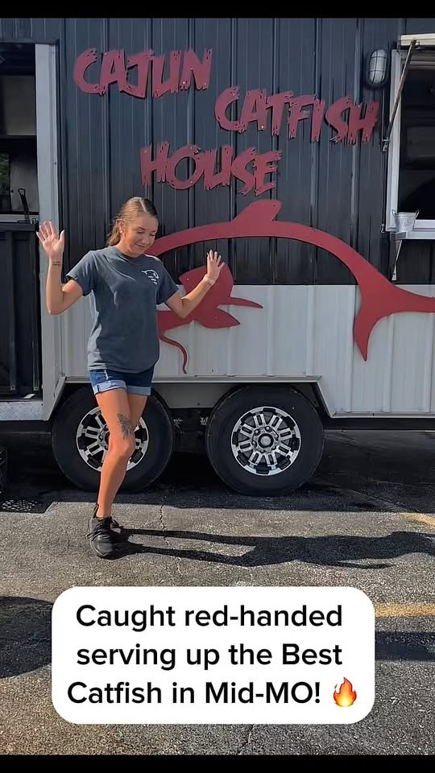

THE BEST
CATFISH
WEST OF THE
BAYOU
Direct from the Delta to the heart of Missouri. We’re serving up high-heat heritage and the crispiest fillets you’ve ever tasted.
3/5 Rating
CUSTOMER REVIEWS
Locally owned
Cajun Catfish House - Food Truck
Jefferson City local
Serving the community
The Wall of Flavor
Hear it from the folks who’ve braved the heat.
Heritage
& Heat
It started with a cast iron skillet and a family recipe that hasn’t changed in three generations. We didn’t come to Jefferson City to just sell fish, we came to share the soul of the Bayou.
Every morning, we hand-prep our spice blends and source the freshest catch. When you see the Cajun Catfish House truck, you know you’re getting the real deal. No shortcuts, just hard-earned flavor.

Chef 'Big Al' Robinson
Founder & Pitmaster
#FindTheTruck
We're rollin' through Jefferson City. Catch us before we sell out.
This Week's Stops
MON , WED
State Capitol Grounds
11:00 AM , 2:30 PM
THU , FRI
MU Health Care Plaza
10:30 AM , 2:00 PM
SATURDAY
Farmer's Market Central
8:00 AM , 1:00 PM
Follow our live GPS on Twitter/X for real-time traffic updates.
Book the Bayou
Want the truck at your next event? From corporate lunches to backyard weddings, we bring the kitchen to you.